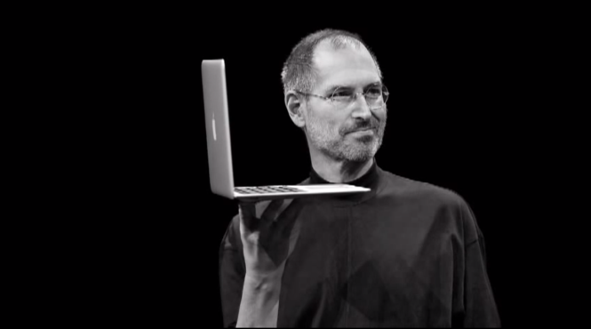

Стивен Пол Джобс родился 24 февраля 1955 года в городке Маунтин Вью, штат Калифорния. Его детство и юность прошли там же, в приёмной семье Пола и Клары Джобс, которым его отдала на воспитание родная мать.
Окончив среднюю школу в 1972 году, Стив Джобс поступил в колледж Рид в Портленде, штат Орегон. После первого семестра отчислился по собственному желанию, но остался жить в комнатах друзей. Тогда он попал на курсы каллиграфии, что впоследствии натолкнуло его на мысль оснастить систему Мак ОэС масштабируемыми шрифтами. Затем Стив устроился на работу в Атари.
Пять лет спустя Стивен Джобс и Стивен Возняк стали основателями компании «Эпл». Автором большинства разработок был Стивен Возняк, тогда как Джобс выступал маркетологом. Считается, что именно Джобс убедил Возняка доработать придуманную им схему микрокомпьютера, и тем самым дал толчок к созданию нового рынка персональных компьютеров.
В 1986 году Джобс продал большинство своих акций Эпл и основал компанию Нэкст Компьютер. Год спустя Стив Джобс стал одним из основателей анимационной студии Пиксар.
В 2000 основатель Эпл попал в Книгу рекордов Гиннеса как исполнительный директор с самой скромной зарплатой в мире. По официальным документам, зарплата Джобса составляла доллар в год; впоследствии подобную схему зарплаты использовали другие корпоративные руководители.
В 2001 году Стив Джобс представил первый плеер айпод. Через несколько лет продажа айпод стала основным источником дохода компании. Под руководством Джобса Эпл к 2006 году существенно укрепила свои позиции на рынке персональных компьютеров, чему способствовал переход машин Макинтош на высокопроизводительные процессоры производства Интэл.
В 2006 году компания представила сетевой мультимедийный плейер Эпл тиви. Через год начались продажи мобильного телефона айфон. В 2008 Стив продемонстрировал самый тонкий ноутбук в мире, носящий название МакБук Эйр.
В конце 2003 года Джобсу поставили диагноз – рак поджелудочной железы. К счастью, опухоль не была смертельной: Стива бы спасла операция. Однако он на неё не согласился, и на протяжении девяти долгих месяцев, следовал особой диете, которая, как он предполагал, вылечит его недуг. Только в августе 2004 года он дал согласие на операцию. В 2009 ом ему сделали пересадку печени.
В 2010 Cтив Джобс неожиданно вновь проявил себя как очень активный исполнительный директор. Самой крупной новинкой, бесспорно, стал айпэд, – планшет на базе ай Ос, представленный Джобсом 27 января 2010 года.
2 марта 2011 Стив Джобс выступает на презентации планшета Эпл второго поколения – айпэд два. Несмотря на плохое состояние здоровья и отсутствия Стива на публичных мероприятиях, он решил самостоятельно представить детище, которое «займет место персональных компьютеров». 24 августа 2011 Стив Джобс объявляет о своей отставке с поста генерального директора Эпл.
5 октября 2011 Стив Джобс скончался.